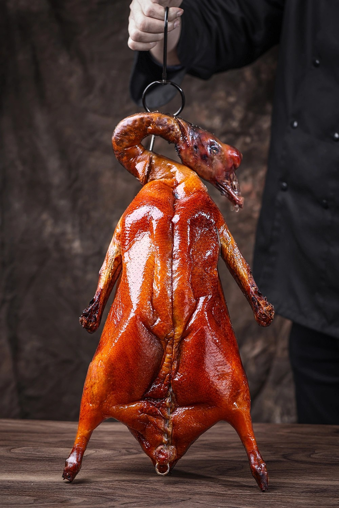
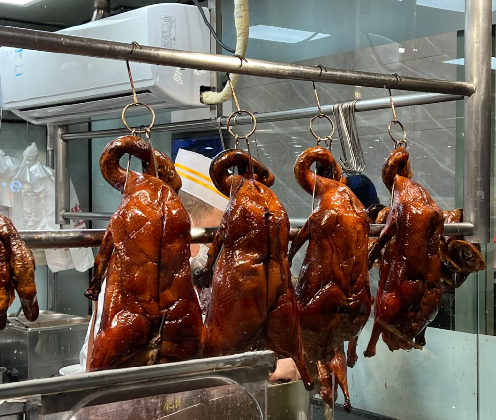
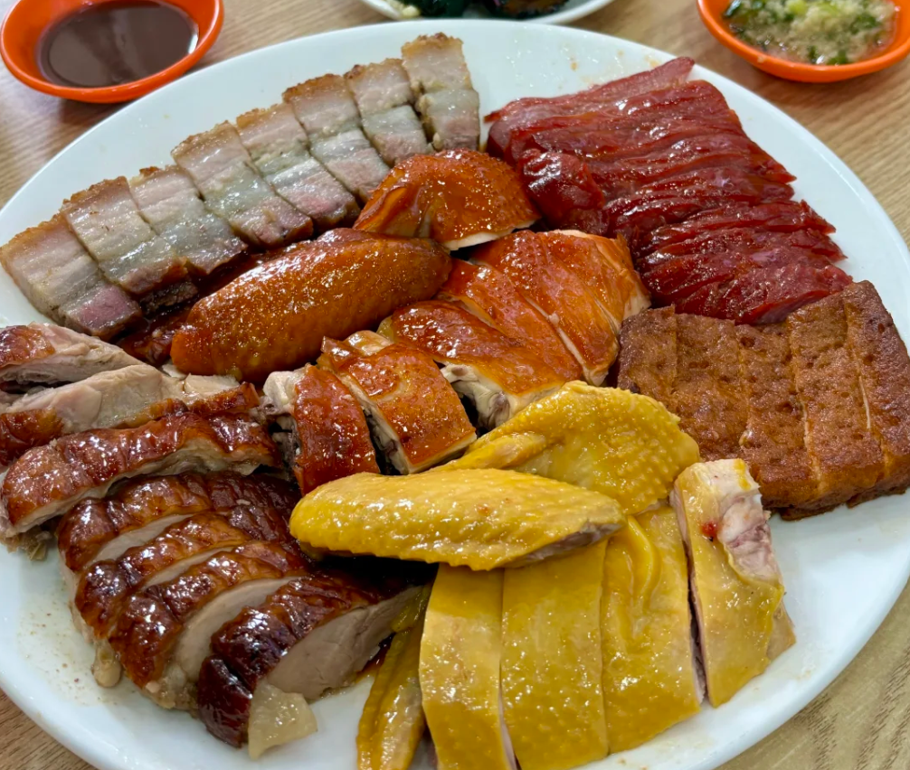

美食概述
广州烧鹅是粤菜中的经典代表，以其皮脆、肉嫩、骨香、味美的特点而闻名中外。选用优质清远黑棕鹅，经过特殊的腌制和烤制工艺，呈现出诱人的金黄色泽和独特的香气。
广州烧鹅的历史可以追溯到明代，经过数百年的发展，如今已成为广州饮食文化的重要象征。无论是在高档酒楼还是街头巷尾的烧腊店，都能品尝到这道美味佳肴。
主要分类
- 深井烧鹅 经典之选
- 荔枝木烧鹅 香气浓郁
- 脆皮烧鹅 皮脆肉嫩
特色特点
- 皮脆如琉璃
- 肉嫩多汁
- 骨香浓郁
- 色泽诱人
美食画廊
欣赏烧鹅的精美图片，感受这道传统美食的独特魅力。

传统烧鹅
经典的深井烧鹅，皮脆肉嫩，香气四溢。

荔枝木烧鹅
使用荔枝木烤制，带有独特的果香，风味更加浓郁。

烧鹅拼盘
烧鹅与其他烧腊组合的拼盘，是粤菜中的经典搭配。
制作方法
了解烧鹅的制作过程，感受传统美食的魅力。
原料准备
-
1
鹅肉
选用12-14周龄的清远黑棕鹅，体重约3-4公斤，肉质鲜嫩，脂肪分布均匀。
-
2
腌制料
五香粉、盐、糖、料酒、生抽等香料。
-
3
脆皮水
麦芽糖和白醋调制的脆皮水，使鹅皮更加酥脆。
制作步骤
-
1
腌制
将鹅清洗干净，用五香粉、盐、糖、料酒、生抽等香料腌制数小时，使香料充分渗透到鹅肉中。
-
2
上色
用麦芽糖和白醋调制的脆皮水均匀涂抹在鹅皮上，自然晾干或用风扇吹干。
-
3
烤制
放入预热至200-220℃的烤炉中烤制，先用高温使鹅皮酥脆，再用低温慢烤至鹅肉熟透，整个过程约1.5-2小时。